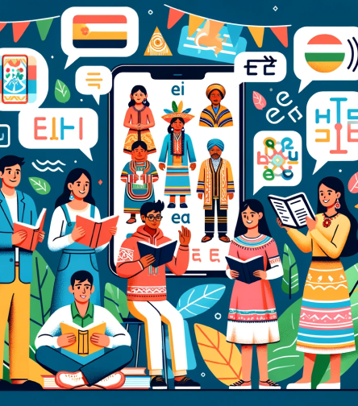

Sumérgete en la riqueza de las lenguas nativas y descubre su impacto cultural. IndiLingua te permite aprender lenguas nativas de manera interactiva y accesible. Con nuestra plataforma, puedes conectarte con hablantes nativos, explorar su cultura y contribuir a la preservación de su patrimonio lingüístico.
